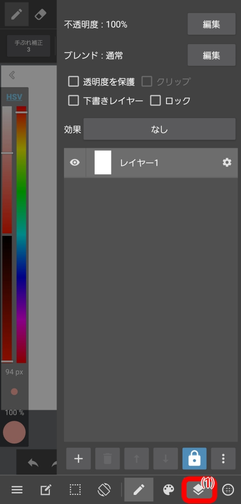

MediBang Paint 用了半年，这四个坑踩完才敢说入门
MediBang Paint 看着简单——免费、跨平台、漫画功能齐全，但真正上手到能稳定出稿，中间有几个容易让人白干几天的坑。本文整理了我踩过的四个典型翻车现场，每个都附了症状、原因和解法，希望你看完不会再走回头路。
MediBang Paint 这款软件吧——从medibang官网的介绍就能看出来，瞄准的就是二次元和漫画圈的创作者。第一次装上去觉得"这不就是个画图工具吗"。手机能画、电脑能画、免费还带漫画分格——下载也不麻烦，各大应用商店和官网直链都能拿到。界面干净，笔刷够用，新人上手五分钟就能摸出一张线稿。
但我用了大半年才敢说，它看着简单，其实藏着好几个让你白干一两天的暗坑。今天把踩过的四个最痛的整理出来，每个都讲清楚症状、原因和解法。你要是能在动笔前把这些都过一遍，能省不少返工的功夫。
坑一：草稿图层没处理，导出后还在成品里
这是我踩的第一个坑，也是最丢人的一个。
症状：线稿勾完了、颜色上完了，打开导出的 png 准备交稿。结果仔细一看，左上角还留着几根打草稿时画的辅助线——明明我标记了"草稿图层"啊？
我当时以为是软件 bug，卸载重装了一遍问题依旧。后来去medibang文档翻了半天才反应过来。
原因：草稿图层的"草稿"标记，作用比我想的窄得多。它只保证两件事：不影响油漆桶的自动选区（不会误抓草稿线去填色），印刷时不会出现在成稿里。但"导出 png"这个动作，不同版本的处理方式不一样——有的版本会把草稿层原样导出，有的版本会隐藏但不会删除，总之不会自动帮你清理。

解法：别把草稿标记当成万能保险。我现在养成了一个习惯——勾完线、上完色这两个关键节点，随手"拼合可见图层"另存一份备份。正式导出前，先把所有草稿层逐个删掉或合并到线稿层。多花十秒钟，省掉你交稿前半小时抓狂的机会。
坑二：印刷输出分辨率不对，灰阶印出来成了杂点
如果你画的是漫画要拿去同人志投稿或者印刷，这个坑大概率会踩。
症状：画的时候在屏幕上看着一切正常，拿去印刷厂交了文件。收到成稿一翻——整个页面都是糊的，之前用半透明叠出来的灰阶区域变成了密密麻麻的杂点，根本没法看。
原因：有三层坑叠在一起。第一层是画布 dpi 和素材 dpi 没对齐——我画的时候用的是 350dpi 的屏幕稿，但印刷至少要 600dpi。第二层是网点规格没跟上，屏幕上看着均匀的网点，换 600dpi 会明显不一样。第三层最致命：漫画印刷是单色的，灰阶应该用网点表达，而不是半透明色。我当时偷懒直接拉了个不透明度 30% 的灰色画阴影，屏幕上看着柔和，印出来全是点。
解法：动笔前就把画布规格定死 600dpi，别想着"先画完再调"——后期拉大 dpi 质量会明显下降。灰度区域一律用网点层画，导出前可以临时把彩色图层转灰度检查一下对比度。另外，每家印刷厂的规范不一样，下单前一定要看他们的制作说明，有的还要求 ICC 色彩配置文件，这个别漏了。
坑三：图层类型选错，后期改不了返工
症状：画了十几层线稿，某天想加个纯黑白的剪影效果，新建图层开画——结果发现这个"彩色图层"画出来的黑线边缘总带点灰，调不出来那种干净的纯黑纯白。
原因：MediBang Paint 的图层不是只有一种。彩色图层是标准 RGB，怎么画都带颜色；1bit 图层才能画真正的单色（只能画纯黑或纯白，没有中间浓淡）；8bit 图层是单色系灰阶。我之前根本没注意到图层类型这回事，全都用彩色图层画，线稿层偶尔会带一些意料之外的色偏，后期想转 1bit 又怕丢细节。
解法：线稿一律用 1bit 图层，干净利落，后期想调粗细都方便。上色用彩色图层。灰度稿、漫画原稿用 8bit。半色调图层是给漫画贴灰用的，画上去自动变成网点——别拿它当普通上色图层用。反正图层类型这东西改起来麻烦，新建图层的时候花两秒钟选对类型，比画了三天再想办法补救轻松得多。
坑四：自制笔刷间距没调，刷出来要么糊要么断
症状：刷花瓣纹理做背景，选了一张抠好的花瓣图做笔刷。试了一下——要么太密糊成一片看不清花瓣形状，要么太疏，中间有明显的断档。
原因：自制笔刷默认的尺寸间隔参数只是一个初始值，不一定适合你选的那张图。我之前以为"导入了就能用"，其实每张纹理图的最佳间距都不一样——水滴和雪花的间隔要求肯定不同。另外，不同版本里"添加笔刷"的菜单位置还不太一样，我曾经在菜单里翻了五分钟才找到入口。
解法：选好纹理图之后先别着急铺大面积。调尺寸间隔的时候，画布上试刷几笔，调到"能看出单个形状又不散"的程度再批量铺。至于菜单位置，桌面版一般在笔刷面板的右上角菜单里，移动端长按笔刷列表就能调出。多试几次就熟了。
防坑清单
写完才发现，这四个坑其实没有一个是"软件坏了"——全是我自己没注意到的细节。总结五条速查清单，每次动笔前过一遍就行：
- 勾线和上色这两个节点，随手拼合可见图层另存一份备份，防止图层结构损坏
- 要印刷的稿子从一开始就建 600dpi 画布，灰阶用网点层画而不是半透明
- 新建图层花两秒钟选对类型：线稿用 1bit、上色用彩色、灰度用 8bit
- 草稿图层只是印刷时隐藏用的，导出前记得删或合并
- 自制笔刷别用默认参数，先调间距到舒服再批量刷
知道这些坑之后，这软件其实相当省心。
MediBang Paint 的中文资料整理了一份在各个开源仓库都能访问——GitHub 上是主仓库，维护得最全；国内网络不方便的话可以看Gitee 镜像；另外GitCode 那份也同步了更新，随你选哪个顺手。